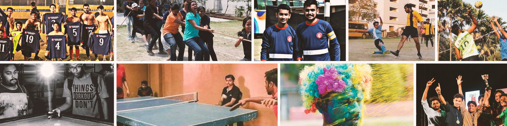
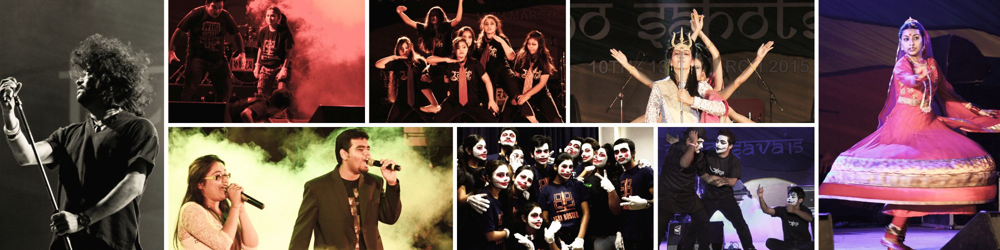

|
Student Life
Student life in Techno India University, West Bengal, is undoubtedly an incredible, unique experience infused with exuberance. As a student of the University, they can join a huge range of clubs, make new friends from diverse backgrounds, share experiences and treasure memories for the rest of their lives. The university campus boasts of the diversity of live events occurring on campus. The progressive and thriving, lush green campus is committed to fostering a welcoming environment that provides all students the opportunity to participate fully in campus life.

|
Sports
At Techno India University, West Bengal, Sports is an integral part of educational programme designed to promote the optimum development of an individual physically, emotionally, mentally, socially and spiritually through total body movement in the performance of properly selected physical activities. Our goal is to provide students with knowledge, skills, capacities, values and the enthusiasm to maintain a healthy lifestyle into adulthood.

|
Cultural Activities
Techno India University, West Bengal, organises various informal social events throughout the year. It encourages students to strive for excellence in extra-curricular activities which extend beyond the performance in classrooms. ‘Sahotsava’, the annual cultural extravaganza organized by the University, has an unparalleled reputation of bringing together the best artists. Our cultural fests embody great gusto and the events are spread across various spectrums such as performing arts, fine arts, literature, lifestyle and sports. Over the last three decades, our resolve to make the cultural fests bigger and better has only strengthened. The enigmatic cultural activities of the bubbling young minds in the university have set the stage on fire. Techno India University, West Bengal has won world-wide appreciation and acclaim due to the achievements of Techno Indians in the cultural sphere. The exuberant atmosphere of this prestigious university is conducive for nuanced cultural growth.

|